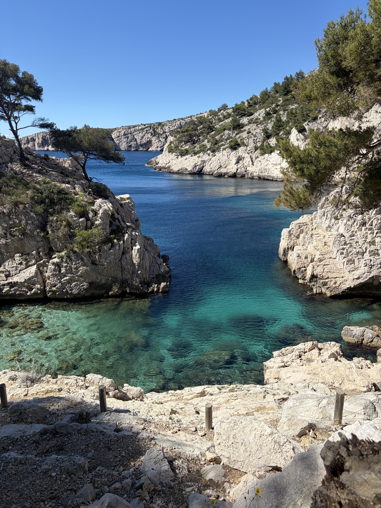
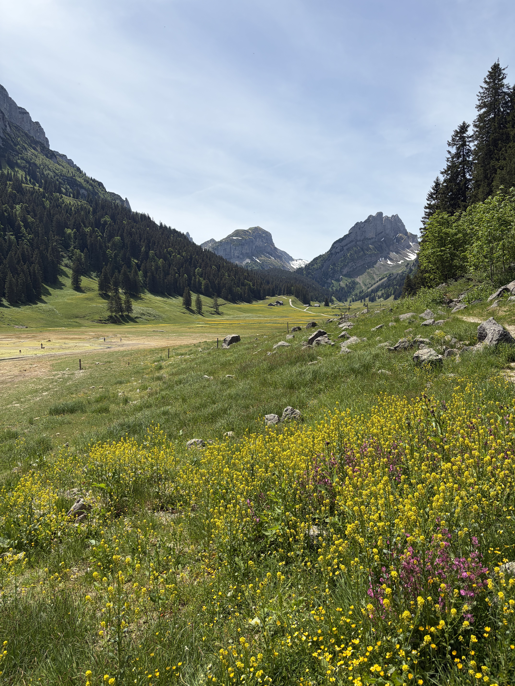

Parte primera
Las estrellas fugaces (I)
¿A quién el gran cielo sombrío
arroja sus astros de oro?
Lluvia resplandeciente de la sombra,
caen… ¡aún más!, ¡aún más!
¡Aún más! Lejanos resplandores,
fuegos puros, pálidos orientes,
centellean… ¡oh puñados
de aterradores diamantes!
Es el esplendor errante.
Son puntos del universo.
¡El relámpago en la esmeralda!
¡Acianos entre relámpagos!
¡Realidades y quimeras
que cruzan nuestras noches de verano!
¡Efímeros carbunclos
de la oscura eternidad!
¿De qué mano salen ellas?
Cielos, ¿a quién se arrojan
estos torbellinos de chispas?
¿Será al alma de Platón?
¿Será al espíritu de Virgilio?
¿Será a los montes? ¿Al verde mar?
¿Será al inmenso Evangelio
que Jesucristo mantiene abierto?
¿Será a la inmensa tiara
de algún Moisés niño,
cuya alma tiene ya la forma
del firmamento triunfante?
¿Van estas llamas hacia las plegarias?
¿A quién el Profundo Desconocido
añade estas luces,
vagas llamas de su frente?
¿Será, en el soberbio azul,
a las religiones que Dios,
para dar más fuerza a su palabra,
arroja estas lenguas de fuego?
¿Será sobre la Biblia
donde arde, estalla y brilla
la terrible dispersión
del oscuro joyero de la noche?
Nuestras preguntas en vano apremian
al cielo, fatal o bendito.
¿Quién puede decir a quién se dirigen
estos envíos del infinito?
¿Qué son estas caídas
de relámpagos arrancados al cielo?
¡Misterio! ¿Son combates?
¿Son bodas? Buscad.
¿Son los ángeles del azufre?
¿Vemos algún enjambre azul
de guerreros del abismo
huyendo sobre caballos de fuego?
¿Es el Dios de los desastres,
el irritado Sabaoth,
quien apedrea con astros
a algún sol rebelde?

Parte segunda
Las estrellas fugaces (II)
¡Pero qué importa! La hierba está verde,
¡y es verano!
No pensemos, Jeanne,
más que en la sombra entreabierta,
en los perfumes y en las canciones.
La gran estación jubilosa
nos ofrece los prados, las aguas,
los berros húmedos, la encina,
y el ejemplo de los pájaros.
El verano, vencedor de las tormentas,
dorador de los cielos lavados,
pone rayos sobre nuestras cabezas
y fresas bajo nuestros pies.
¡Verano sagrado! El aire suspira.
Dios, que quiere apaciguarlo todo,
hizo el día para la sonrisa
y la noche para el beso.
El estanque tiembla bajo los alisos;
la llanura es un abismo de oro
donde corre, entre los grandes trigales amarillos,
el escalofrío de la cosecha.
Este es el instante en que hay que amar,
decírselo a los bosques,
y tener por supremo propósito
el musgo de las grutas frescas.
¿Para qué pensar en las cosas
que suceden en los cielos?
Ven, entreguemos nuestra alma a las rosas;
nada la llena mejor.
Ven, dejemos todos esos sueños,
puesto que estamos en los meses
en que las enramadas, las orillas,
y los corazones están llenos de voces.
El amante arrastra a la amada,
envalentonado en su deseo
por la encantadora traición
del pañuelo que deja ver el pecho.
Tu pie se adivina bajo el vestido,
Jeanne, y prefiero contemplarlo
antes que escuchar en el espacio
las sombrías estrofas del anochecer.
No hay que temer, bella mía,
mostrar a los prados florecidos
que eres joven, poco rebelde,
blanca y recién llegada de París.
El campo acaricia
al amor deslumbrado y fresco;
el árbol es feliz con solo sentir
que Jeanne va a decir que sí.
¡Amémonos!
Y que las esferas hagan lo que quieran.
Es de noche; en los claros del bosque
las canciones danzan en corro.
El perfume corre entre los rocíos;
todo canta; y en los torrentes
los idilios descalzos
bañan sus pies transparentes.
La bacanal de la sombra
se celebra vagamente
bajo los innumerables follajes
penetrados por el firmamento.
Duendes y golondrinas,
entrevistos y desvanecidos,
dejan un encantador rumor de alas
en el azul horror de la noche.
La curruca y la sirena
alternan sus canciones
en la inmensa sombra serena
que dice a las almas: «Venid».
Porque las soledades aman
esas caricias, esos estremecimientos,
y al caer la tarde las ramas
siembran sílfides sobre el césped.
El elfo cae de las lianas
con flores llenándole las manos;
se ven pálidas dianas
en la claridad de los senderos.
El ondino besa a los nenúfares;
el matorral ríe cuando siente
las curvas que las hadas
dibujan al pasar sobre las hierbas.
Ven; los ruiseñores te escuchan.
Y el Edén no queda destruido
porque dos amantes se sumen
a estas bodas de la noche.
Ven, y que en su nido verdeante
el gorrión vagabundo
sienta celos al ver mi dicha
y tu corazón tan cerca del mío.
Encantemos al árbol y a sus ramas
con el tierno acompañamiento
que damos al murmullo de las hojas
al amarnos.
Ante el rostro de los misterios,
gritemos que nos amamos.
Los grandes robles solitarios
lo consienten desde las montañas.
¡Oh, Jeanne! Para estas fiestas,
para estas alegrías, para estos cantos,
para estos amores,
fueron hechas todas las gracias del campo.
No tiembles, aunque un sueño
llene mis ojos ardientes.
No temas ninguna mentira en ellos,
pues mi alma está dentro.
Conserva tu pureza sin miedo.
Sé encantadora con grandeza.
El exceso de tela en la túnica,
Jeanne, vuelve malhumorado al amor.
Sin terror ni sobresalto;
el cielo diáfano absuelve
el pecado de transparencia
de la ligera gasa.
La naturaleza está enternecida.
¡Hay que vivir!
Hay que vagar
en la dulce insolencia
de reír y adorarse.
Ven, ama, olvidemos el mundo,
mezclemos alma con alma,
y mira ascender la profunda luna
entre las ramas del bosque.

Parte tercera
Las estrellas fugaces (III)
Los dos amantes, bajo las nubes,
sueñan, radiantes y sonrosados…
La inmensidad continúa
sus siembras de soles.
A través del cielo sonoro,
mientras desde lo alto de la noche
llueven, como polvo de aurora,
los astros florecidos,
tantos fuegos descendentes
que atraviesan el vasto cenit oscurecido,
enorme brasa que dispersa
el incensario del infinito;
abajo, entre el rocío,
desplegando el aro, el clavel,
la vincapervinca, el pensamiento,
el lirio, resplandor de julio,
medio ahogada en la bruma,
en el centro del bosque,
la pradera se extiende,
tiembla, y parecería
que la tierra, bajo los velos
de los grandes bosques bañados en lágrimas,
para recibir las estrellas
extiende su delantal de flores.